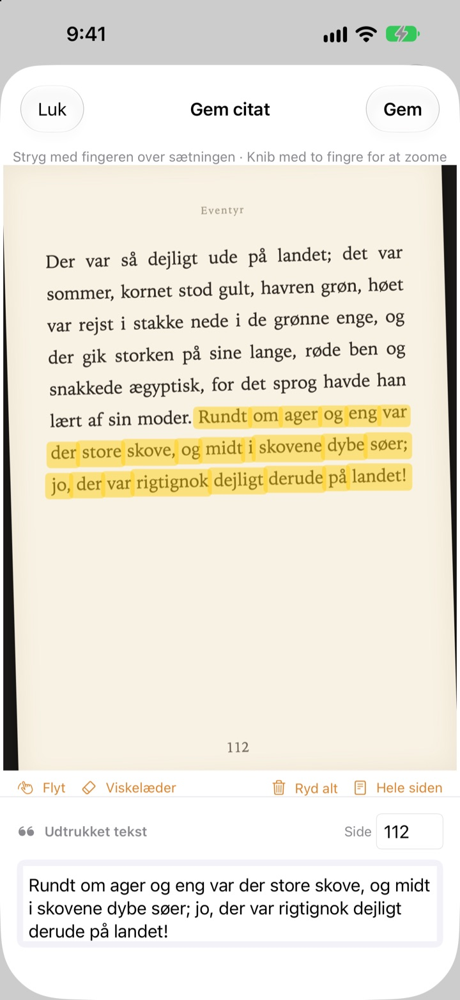
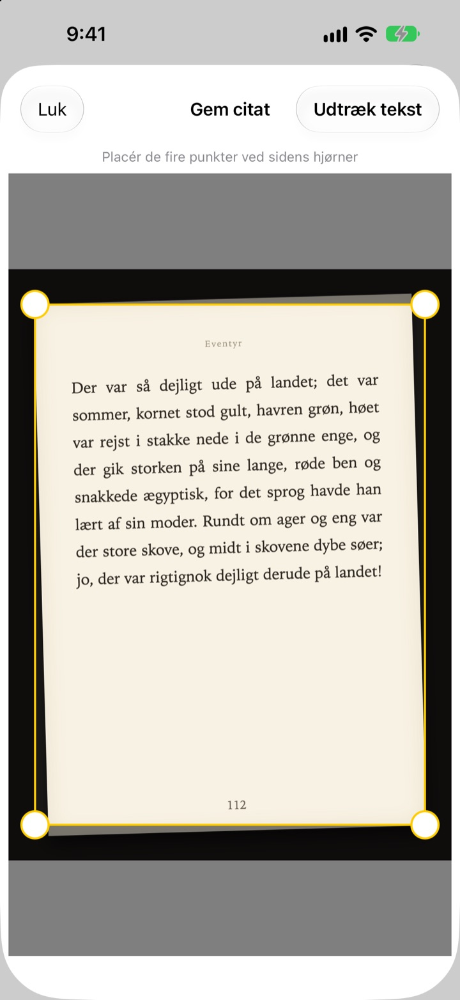
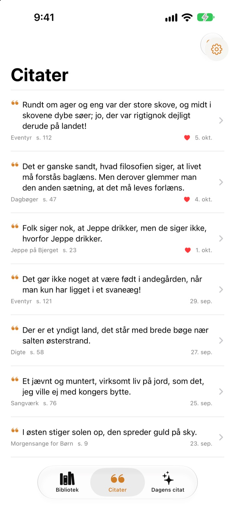
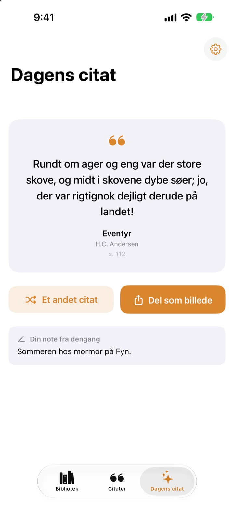

Understreg i bogen
uden en pen
Tag et billede af siden, stryg fingeren hen over den sætning, du kan lide, og kun den gemmes som tekst. Bog og sidetal kommer med.
Alle funktioner er gratis, uden reklamer.

Prøv at stryge
Stryg en finger eller musen hen over en vilkårlig sætning på siden herunder. Kun de ord, du rører, kommer med på kortet.
Hvor bliver de gode sætninger af?
Det er en biblioteksbog, så du må ikke skrive i den. Et billede af siden forsvinder blandt tusindvis af andre i kamerarullen. Skriver du sætningen ind i en noteapp, kommer titel og sidetal sjældent med. Bookmark Shot gemmer sætningen, bogen og siden med to bevægelser: tag et billede, og stryg.
Skævt billede, lige side
Når du har taget billedet af siden, placerer du de fire hjørner, og selv et skævt billede rettes ud som et stykke papir. Jo skarpere bogstaverne er, jo bedre genkendelse.
Billeder, der allerede ligger i dit fotobibliotek, kan også bruges.

Alle citater ét sted
Dine bøger står i et bibliotek af omslag, og dine citater samles i én liste. Søg efter sætning, note eller bogtitel, og giv de citater, du vil læse igen, et hjerte.
Tilføj en bog med ét billede af omslaget. Titel og forfatter læses for dig, og ISBN også, hvis stregkoden bag på bogen er med i billedet.

Mød de sætninger, du havde glemt
Dagens citat bringer hver dag et af dine gemte citater tilbage sammen med den note, du skrev dengang. Hav det på hjemmeskærmen eller låseskærmen med en widget.
Glad for det? Gør det til et kort i papirstil, og del det.

Kom i gang i tre trin
- 1
Tag et billede af omslaget
Titel og forfatter udfyldes. Ret dem, før du gemmer.
- 2
Tag et billede af siden
Placer de fire hjørner, så rettes den ud.
- 3
Stryg over sætningen
Sidetallet findes og gemmes med.
Værktøjer på markeringsskærmen
- Stryg med fingeren
- vælger kun de ord, du rører
- Knib
- zoom ind for at stryge mere præcist
- Flyt
- træk rundt i en side, der er zoomet ind
- Viskelæder
- fjerner ord, du har strøget over
- Ryd alt
- fjerner alle valgte ord
- Hele siden
- beholder al tekst på siden
- Sidefelt
- det fundne sidetal, kan rettes
Med VoiceOver dobbelttrykker du på en linje for at tilføje eller fjerne den.
Alle funktioner er gratis
Gratis
- Tilføj bøger fra omslaget, ISBN fra stregkoden
- Udretning af sider og markering med fingeren
- Automatiske sidetal
- Bibliotek, søgning i citater og favoritter
- Dagens citat med widgets til hjemmeskærm og låseskærm
- Del som kortbillede
- Synkronisering med iCloud
Støt udvikleren
- Send et lille tip fra Indstillinger, hvis du har lyst
- Tips låser ikke noget op. Appen er den samme uanset
Ingen reklamer, intet abonnement.
Spørgsmål
Bliver mine billeder eller citater sendt nogen steder hen?
Nej. Tekstgenkendelsen sker helt på din enhed med Apple Vision, og dine billeder og citater sendes aldrig til en server. Appen virker også offline. Læs mere i privatlivspolitikken herunder.
Hvilke sprog kan den læse?
Tekstgenkendelsen foretages af iOS på din enhed. Den læser bøger på koreansk, engelsk, japansk, kinesisk, russisk og de fleste vesteuropæiske sprog, og på nyere iOS-versioner også thai, vietnamesisk, tyrkisk, indonesisk, polsk, tjekkisk, nederlandsk og de nordiske sprog. Græsk kan endnu ikke genkendes.
Hvordan vælger jeg kun den sætning, jeg vil have?
Når du har taget billedet af siden, stryger du fingeren hen over sætningen, som med en overstregningstusch, så vælges kun de ord. Knib for at zoome ind og få større præcision. Der er også Viskelæder, Ryd alt og Hele siden.
Titlen eller forfatteren er forkert.
Omslagsgenkendelsen gætter ud fra skriftens størrelse, så den kan tage fejl på meget dekorative omslag. Du kan rette titel og forfatter, før du gemmer bogen.
Sidetallet er forkert.
Det læses fra tallene i kanten af billedet. Ret det bare i sidefeltet, før du gemmer.
Kan jeg se mine citater på flere enheder?
Ja. Er du logget ind på iCloud med den samme Apple-konto, og er iCloud Drive slået til, synkroniseres dine bøger og citater automatisk.
Hvordan tilføjer jeg widgetten?
Hold fingeren på hjemmeskærmen, tryk på Rediger > Tilføj widget, og vælg Bookmark Shot. På låseskærmen holder du fingeren på den og trykker på Tilpas. Dagens citat vises der.
Kameraet virker ikke.
Tjek under Indstillinger > Bookmark Shot, at der er givet adgang til kamera og billeder. Det kræver en rigtig iPhone at tage billeder.
Hvad skal jeg bruge?
En iPhone med iOS 17.0 eller nyere.
Hvordan kontakter jeg jer?
Send feedback fra appens Indstillinger (tandhjulet), eller skriv til os på adressen herunder. Vi svarer som regel inden for to-tre dage.
Spørgsmål eller feedback? Skriv til leeo@kakao.com.